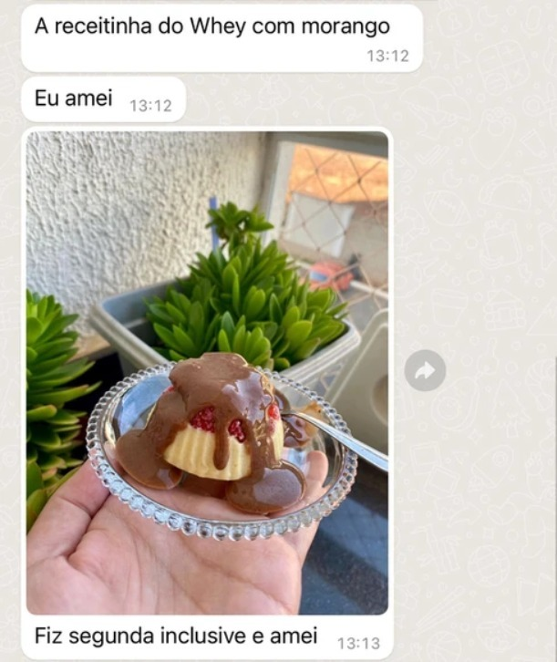
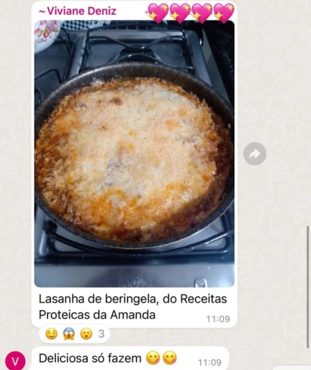
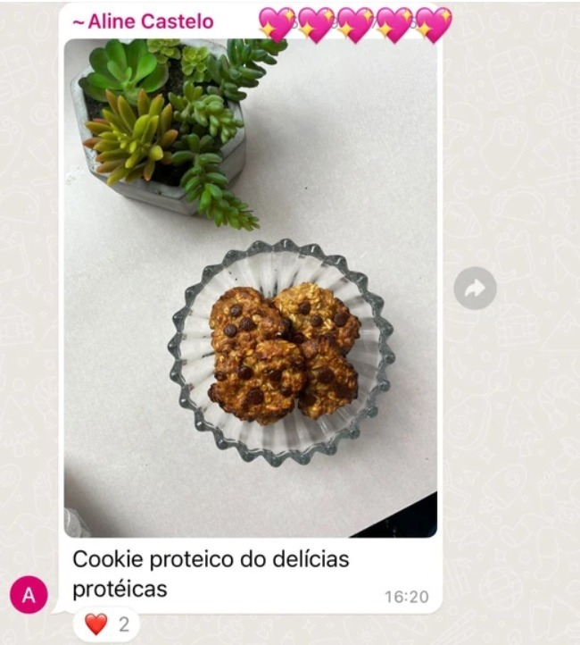
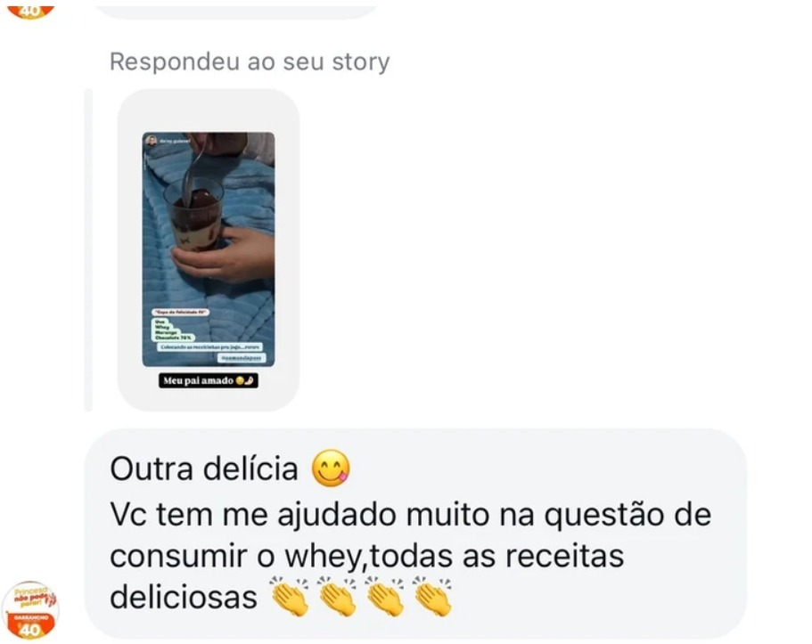
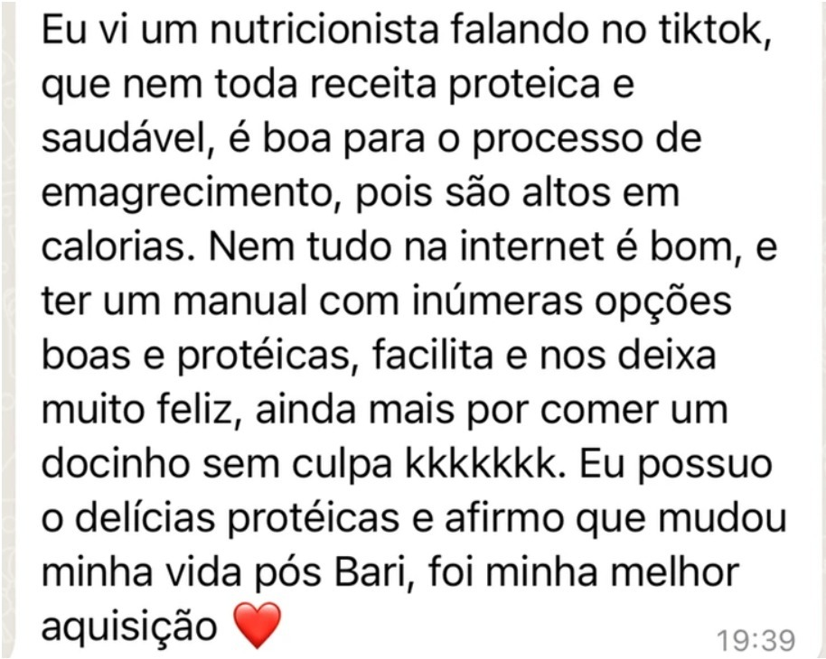
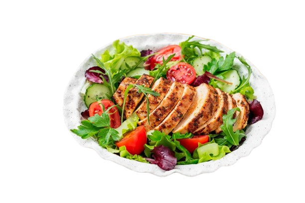

🍪 Receitas Proteicas Deliciosas para Você Comer Sem Culpa e Sem Sair da Dieta!
Descubra como preparar bolos, doces e lanches saudáveis, ricos em proteínas e fáceis de fazer, sem abrir mão do sabor!
- 💪 Alta concentração de proteínas para saciedade e nutrição
- 🍰 Doces e lanches deliciosos, sem ingredientes ultraprocessados
- ⏱️ Receitas rápidas e práticas, ideais para o dia a dia
📖 O guia definitivo para quem quer comer bem e manter uma alimentação saudável!
👉 QUERO MINHAS RECEITAS AGORA❌ Você Ama Doces, Mas Sente Que Precisa Escolher Entre o Sabor e a Saúde?
Se você já tentou seguir uma alimentação saudável, sabe como pode ser frustrante:
- 🚫 Produtos "fit" industrializados são caros e nem sempre saudáveis
- 🚫 Doces comuns são cheios de açúcar e ingredientes ultraprocessados
- 😔 A maioria das receitas saudáveis tem gosto sem graça e textura ruim
- 😩 Dietas restritivas te deixam com vontade de comer besteira
- ⏳ Receitas saudáveis complicadas tomam muito tempo no dia a dia
- 🍽️ Manter uma alimentação equilibrada parece impossível com a rotina corrida
O resultado? Você acaba cedendo às tentações e sente culpa depois. Mas e se existisse um jeito de comer bem, sem abrir mão do sabor e sem sair da sua dieta?
📖 A boa notícia é que existe uma solução prática, saborosa e acessível para isso!
👉 QUERO MINHAS RECEITAS AGORA🍪 A Solução: Receitas Proteicas Deliciosas, Fáceis e Saudáveis!
Agora você pode comer doces e lanches saborosos sem culpa e sem sair da dieta! Com as receitas proteicas da Amanda Pas, você aprende a preparar sobremesas e snacks ricos em proteínas, sem açúcar refinado e sem ingredientes ultraprocessados, tudo de forma prática e acessível.
-
Doces e lanches incríveis que saciam sua vontade de comer bem
-
Receitas rápidas e fáceis, perfeitas para o dia a dia
-
Ingredientes acessíveis, sem precisar gastar fortunas com produtos "fit"
-
Variedade de receitas para não cair na monotonia alimentar e sempre ter opções gostosas
-
Receitas adaptáveis para diferentes objetivos, seja ganho de massa, perda de peso ou apenas uma alimentação equilibrada
-
Passo a passo simples e direto, sem complicação, para qualquer pessoa conseguir fazer
👉 Venha fazer parte da nossa comunidade e transforme sua alimentação de forma simples e prazeroza!
👉 Quero transformar minha alimentação!📖 Como Funciona o Método das Receitas Proteicas da Amanda Pas?
Nosso método foi desenvolvido para quem busca uma alimentação equilibrada sem abrir mão do prazer de comer bem. Através de um guia completo, você terá acesso a:
- ✅ Receitas testadas e aprovadas, com ingredientes saudáveis e acessíveis
- ✅ Passo a passo simples e prático, sem complicação, ideal até para iniciantes
- ✅ Combinação perfeita de sabor e nutrição, com alta concentração de proteínas
- ✅ Opções para café da manhã, lanches e sobremesas, para todas as ocasiões do dia
- ✅ Lista de ingredientes acessíveis para facilitar suas compras no mercado
- ✅ Receitas equilibradas para manter sua saciedade e energia ao longo do dia
🚀 Você não precisa ser um chef para preparar receitas incríveis e saudáveis! Basta seguir o método e aproveitar cada delícia sem culpa.
👉 Adquira as Receitas Proteícas agora e descubra como transformar sua alimentação de forma simples e prazerosa!
👉 Quero transformar minha alimentação!⭐ Veja o Que Quem Já Testou Está Dizendo!
Nada melhor do que ouvir de quem já transformou sua alimentação com as Receitas Proteicas da Amanda Pas:





Agora é a sua vez! Experimente e descubra como é fácil e gostoso manter uma alimentação equilibrada.
👉 QUERO MINHAS RECEITAS AGORA👩🍳 Quem criou o Receitas Proteícas para você
Amanda Pas é apaixonada por gastronomia e nutrição, e há anos vem ajudando milhares de pessoas a descobrirem que é possível ter uma alimentação equilibrada sem abrir mão do prazer de comer bem.
💡 Criadora das Receitas Proteicas, ela desenvolveu um método simples e acessível para quem deseja incluir doces e lanches saudáveis na rotina, sem culpa e sem complicação.
📲 Com uma comunidade engajada e apaixonada por suas receitas, Amanda compartilha dicas, truques e receitas deliciosas que unem sabor e nutrição, transformando a forma como as pessoas encaram a alimentação saudável
✨ Agora é a sua vez de aprender com quem entende do assunto!
👉 QUERO MINHAS RECEITAS AGORAReceitas Proteicas da Amanda Pas
As Receitas Proteicas é um guia completo e prático para quem deseja preparar doces e lanches saudáveis, saborosos e nutritivos, sem complicação e sem gastar fortunas com produtos fit industrializados.
Dentro das receitas, você vai encontrar:
- ✅ Receitas fáceis e deliciosas, ricas em proteínas e sem açúcar refinado
- ✅ Passo a passo detalhado, ideal para qualquer nível de experiência na cozinha
- ✅ Lista de ingredientes acessíveis, para facilitar sua rotina alimentar
- ✅ Dicas de substituições e adaptações, para personalizar as receitas conforme sua necessidade

Com as Receitas Proteícas da Amanda Pas, você aprende a fazer uma alimentação deliciosa e descomplicado.
👉 QUERO ACESSAR AS RECEITAS PROTEÍCAS AGORA!🎁 Tudo o Que Você Vai Receber ao Garantir as Receitas Proteícas!
Ao adquirir as Receitas Proteicas da Amanda Pas, você terá acesso a um pacote completo para transformar sua alimentação de forma simples, deliciosa e saudável:

Acesso imediato a todas as receitas e módulos detalhados

Receitas exclusivas e testadas para doces, lanches e refeições proteicas
E-book digital com todas as receitas para você consultar sempre que precisar

Bônus especiais com novas receitas e conteúdos extras
Tudo o que você precisa para começar a preparar suas receitas proteicas ainda hoje!
👉 QUERO ACESSAR AGORA🎁 Bônus Exclusivos para Você!
Além do curso completo, você também vai receber bônus especiais para potencializar ainda mais seus resultados e facilitar sua jornada na alimentação saudável:

BÔNUS 1 – Lista de Supermercado Saudável
Descubra como escolher os melhores ingredientes por um preço acessível, economizando sem abrir mão da qualidade.

BÔNUS 2 – Planner Organizando Suas Refeições da Semana
Organize suas refeições da semana de forma correta e saudável

BÔNUS 3 – Molhos de Salada
Aprenda a fazer molhos que acrescentam um toque especial na sua salada!
Esses bônus foram criados para tornar sua experiência ainda mais prática e completa!
🎯 Tudo isso por apenas R$47!
Um investimento único para ter acesso vitalício a um método completo que vai transformar sua alimentação com receitas saudáveis, saborosas e fáceis de preparar! 🍽️🔥
💡 Aproveite essa oportunidade e comece hoje mesmo!
💳 Garantir Meu Acesso Agora✔️ Garantia de 7 dias! Se não gostar, devolvemos seu dinheiro.
🛡️ Garantia de Satisfação 100% Livre de Risco!
Temos total confiança na qualidade do Curso de Receitas Proteicas da Amanda Pas, e queremos que você também tenha!
Por isso, oferecemos uma garantia incondicional de 7 dias.
🥄 Teste todas as receitas, assista às aulas e experimente o método sem compromisso.
Se dentro desse período você sentir que o curso não é para você, basta enviar um e-mail e devolvemos 100% do seu dinheiro, sem burocracias e sem perguntas!
💡 Ou você aprende a fazer receitas proteicas deliciosas e saudáveis, ou recebe seu dinheiro de volta!
Sua satisfação é garantida. O risco é todo nosso!
🤔 Dúvidas Frequentes
Sim! As Receitas Proteícas foram feitas para todos os níveis. Mesmo que você nunca tenha feito uma receita saudável antes, vai aprender tudo do zero com um passo a passo detalhado.
Não! Todas as receitas podem ser feitas com utensílios comuns que você já tem em casa, como liquidificador, forno e frigideira.
Não! Os ingredientes são acessíveis e fáceis de encontrar em supermercados comuns.
Sim! Você terá acesso vitalício as Receitas Proteícas e poderá assistir às aulas no seu ritmo, quantas vezes quiser.
Se dentro de 7 dias você achar que as Receitas Proteícas não são para você, basta nos enviar um e-mail e devolveremos 100% do seu dinheiro, sem burocracia.
🎯 Agora é a sua vez de transformar sua alimentação!
Não perca mais tempo com dietas sem graça ou receitas difíceis. Com nosso método, você terá acesso a deliciosas receitas proteicas que vão facilitar sua rotina e trazer mais saúde para o seu dia a dia! 🚀
📲 Tire suas dúvidas ou garanta seu acesso agora mesmo pelo WhatsApp:
💬 Fale Conosco no WhatsApp